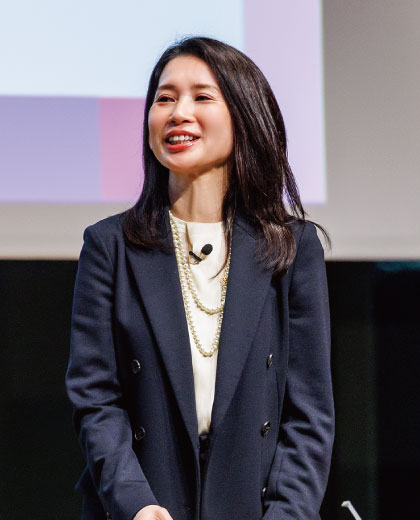
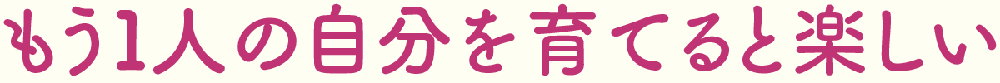

「アエラボ2025」第1回は「キャリアウェルビーイング『あなたの選択、私の選択』」がテーマ。キャリアウェルビーイングとは、仕事だけでなく人生全般におけるキャリアを指す。生き方が多様化する現代において、自分らしさを失わない「キャリアウェルビーイング」とはどのようなものか。ゲストとして、デザイナーでありアーティストでもある篠原ともえさんを迎え、AERA編集長・木村恵子、AERA dot. 編集長・鎌田倫子がファシリテーターとなりトークを展開した。
またホワイエでは、協賛企業8社のうち5社がブースを出展。人気商品やサービスを紹介。軽食ビュッフェやドリンクコーナーもあり、約500人の参加者たちでにぎわった。
ここでは篠原さんとのトークショーの様子を紹介する。
篠原ともえさん／1995年に歌手デビュー。文化女子大学（現・文化学園大学）短期大学部服装学科デザイン専攻卒業。2022年にデザイン・ディレクションを手がけた革の着物作品がニューヨークADC賞、東京ADC賞を受賞。朝日新聞デジタルマガジン&wでコラム「アイデアのありか」を連載中
AERA編集長 木村恵子／1999年、朝日新聞社入社。2004年から「AERA」編集部。22年4月から編集長に
AERA dot.編集長 鎌田倫子／地方新聞の記者を経て朝日新聞出版に入社。「AERA dot.」のデスクを務めたのち現職

鎌田今回のイベントのテーマは「あなたの選択、私の選択」です。篠原さんが心に残っている大きな選択はなんでしょうか。
篠原2020年に夫と一緒にデザイン会社を立ち上げたことが大きな決断でした。このときは芸能事務所を離れ1年間休む決断をし、ＳＮＳもフォロワーの方がいたけれど退会し、全部手放す体験をしてみたんです。やってみたことのない大きな決断ですごく怖かったのですが、おもしろい体験でもありました。自分が変わるというよりも、もう1人自分が増えるという感覚、自分の知らないちょっと強い自分が育っていく感覚があって、「決断っておもしろいな」と思ったんですよね。見たことのない景色だったり、なったことのない感情になれたりするので、みなさんも「怖いな、私にはできないな」と思っていることがあっても、自分を信じて飛び込んでみると「あれ？ 楽しいな」という感覚になれると思います。
鎌田何かを選択するときは「失敗するんじゃないか」という恐れや「何かを捨てたり、これまでの自分を否定したりしなければならないのではないか」という思いがありますが、そうではなく「新しい自分がもう1人できた感覚で楽しい」というのは素敵な考え方ですね。
篠原本当に小さなことから始めてみるといいと思います。例えば服装を変える、新しい趣味を始めてみる、そういう小さなことでも、会ったことのない自分がいるかもしれない。そういう自分と対面してほしい。この経験はおすすめです。
AERAの表紙になれる撮影スポットやバックナンバー販売、スイーツやミニハンバーガーが並ぶ軽食コーナーも。来場者全員にロゴ入りのトートバッグやお菓子が渡された
木村大きな選択から小さな選択まで日々繰り返していると、「あっちを選べばよかった」とネガティブになることもあると思いますが、自分の選択を正解にするためのポイントはありますか。
篠原必殺技は「ネガティブは忘れる」。ネガティブなことに引っ張られるのは時間がもったいないんですよ。忘れる力を鍛えるしかないと思っています。私からも質問いいですか。ＡＥＲＡを通じて届けたいことをお尋ねしたいです。
鎌田ＡＥＲＡはニュースを扱うことで個人と世の中を繋ぐ役割を担っていると思っています。「個人の幸せを大切にしよう」というメッセージとともに、「社会のいい歯車になるのもいい」ということも伝えたいですね。
木村今はＳＮＳも含めて一方向の情報が集まりがちなので、ＡＥＲＡというメディアを通して、いろんな人がいていろんな価値観があって、だからこそこんな出会いもあるということを伝えたいと思っています。一冊に宝箱みたいにいろんなことが詰まっているメディアでありたい。先ほどの篠原さんの表現を借りれば、新しい自分が増えるきっかけになれたらと考えています。篠原さんはご自身の創作を通して届けたいことはなんですか。
篠原私の祖母は着物のお針子で、祖母の着物を私が引き継いだ時に、このＤＮＡも私が継ぎたいと思いました。自分のルーツの中に答えを見つけて、ものづくりをする人生を歩みたいと30代の時に決断したので、それを届けていきたいと感じます。「キャリアウェルビーイング」は仕事だけでなく、自分の幸せをどうクリエイションしていくかということ。とてもいいテーマですね。皆さんも自分の心と向き合って、どのように人生を歩めば幸せになれるのか、ぜひ考えていただけたらと思っています。
協賛企業から、moomoo証券、日本メナード化粧品、ヤクルト本社、国際ビジネスコミュニケーション協会、日本対がん協会がブースを出展。オリジナルノベルティがもらえるスタンプラリーを開催した
moomoo証券株式会社、日本メナード化粧品株式会社、住信SBIネット銀行株式会社、株式会社ヤクルト本社、株式会社みずほフィナンシャルグループ、株式会社ローソン、一般財団法人国際ビジネスコミュニケーション協会、公益財団法人日本対がん協会